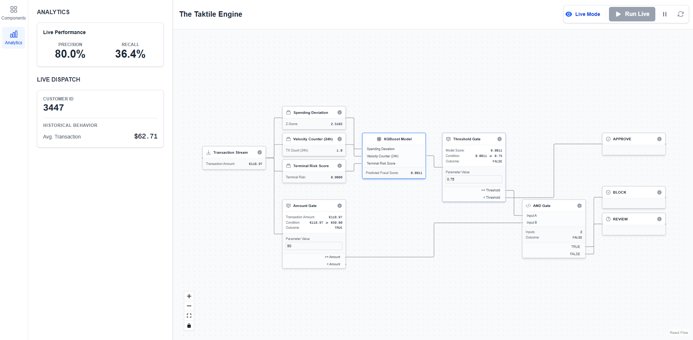

Thesis
My work is driven by the conviction that our progress on foundational challenges is too slow. To accelerate this, my method is to unite the three pillars required for any generational project:
- The engineers who create
- The capital that builds
- The policymakers who clear the path
(America)
(Lithuania)
Portfolio
find-gs.com | Ground Segment Optimizer
Founder & Architect
The Problem: Satellite operators make multi-million dollar procurement decisions based on complex spreadsheets and guesswork, not mathematical proof. This results in wasted budgets and significant loss of potential data throughput.
My Solution: I architected and built an optimization engine that translates raw mission parameters (TLEs, budget, data needs) into a provably optimal ground segment plan. I engineered the core integer programming algorithm in Python, allowing users to instantly solve for maximum data throughput on a fixed budget or minimum cost for a set data quota.
Mission-Critical Systems Integrity | European Space Agency (ESA)
Mission Control Engineer (First Responder)
The Problem: On a live satellite mission, the time between anomaly detection and resolution is critical. As a 24/7 first responder, I was the human firewall preventing minor faults from cascading into mission-threatening failures.
My Solution: I was responsible for the initial triage, root cause analysis, and resolution of all real-time incidents across the full stack-from Linux servers to embedded flight software. To accelerate this process, I designed and built Python and shell scripts to automate key diagnostic checks, reducing manual intervention and shortening our team's response time to ensure >99.9% uptime.
Satellite Control Board | CNRS
Satellite Electronics Engineer
The Problem: A satellite communication subsystem required a new, reliable control board to manage its optical payload and interface with the main onboard computer.
My Solution: I owned the end-to-end hardware development. I designed the schematic and multi-layer PCB in KiCAD, sourced components, and wrote the fault-tolerant embedded C firmware for the STM32 microcontroller.
Full-Stack ML System | Real-Time Fraud Sandbox
Developer & Architect
The Problem: The challenge was to demonstrate the ability to design, build, and deploy a production-grade, full-stack machine learning system from scratch under an extreme deadline.
My Solution: In one week, I built a complete, interactive sandbox for fraud detection. It features a visual drag-and-drop UI (Next.js, React Flow) for building decision logic, a backend engine (FastAPI) to execute it in real-time, and an ML pipeline (XGBoost) to train the fraud model. The entire system is containerized and deployable.
Publications & Research
A New Model for GSaaS Network Selection
Authored a new model that bridges the gap between theoretical optimality and operational reality for satellite ground station procurement. (In peer review, 2026 IEEE Aerospace Conference)
Lectures & Briefings
Lecture Series: Space Optical & Quantum Communications
Core Curriculum
A three-part series covering the foundational principles and advanced applications of optical communications in space, from basic optics to quantum-secured satellite networks.
Fundamentals of optical systems design for the space environment. Covers basic lens and mirror systems, payload integration, and environmental hardening.
Engineering analysis of laser communications. Topics include link budget analysis, atmospheric scintillation, beam pointing, acquisition, and tracking (PAT).
Advanced protocols for secure communication. Focuses on Quantum Key Distribution (QKD), single-photon detectors, and the engineering challenges of deploying quantum payloads.